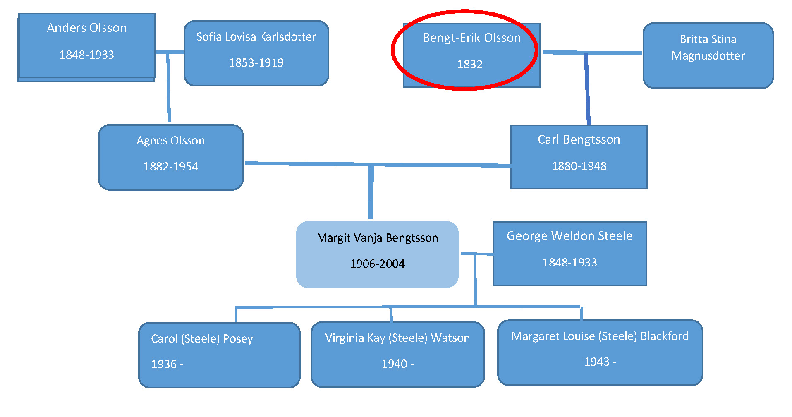

Bengt Erik Olsson
- Born: 1832 Sweden
- Died: ?
- Mother: Stina (Bengtsdotter) Olsson (1805-1892)>
- Father: Olof Olsson (1794-1859)
- Wife: Britta Stina Magnusdotter
Children:
- Kristina Lovisa Olsson 1869-
- Axelina Olsson 1872-
- Elizabeth Olsson 1873-1882 (9)
- Johan Magnus 1875-
- Adolf Olsson 1877-1879 (2)
- Carl Bengtsson 1880-1948
- Emanuel 1881-1881 (<1)
